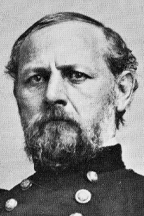

|

|

|
|
|
Don Carlos Buell was born near Marietta, Ohio, on March 23,
1818. He graduated from West Point in 1841 and served in the
Seminole and Mexican Wars, advancing to the rank of major
and participating in the battles of Monterey, Contreras, and
Churubusco. He was severely wounded at the last engagement.
Buell was a lieutenant colonel in the Adjutant General's
Department at the outbreak of the Civil War. On May 17,
1861, he was commissioned a brigadier general of Volunteers
and helped to organize and train the Army of the Potomac. A
more important assignment soon followed: command of the Army
of the Ohio at Louisville, with orders to advance into East
Tennessee and Knoxville. He recommended an alternative plan,
appreciated by neither General George B. McClellan nor
President Abraham Lincoln, of striking south by the
Cumberland and Tennessee Rivers and into Nashville.
When Ulysses S. Grant's advance on Forts Henry and
Donelson forced a Confederate retreat, Buell was able to
march into Bowling Green and Nashville without opposition.
Placed under the orders of General Henry W. Halleck, who
headed the new Department of the Mississippi, Buell was
instructed to advance on Savannah, Tennessee, and join
forces with the troops moving up the Tennessee River. His
lead division did not arrive on the Tennessee River until
April 6, 1862, the day of the Confederate attack at Shiloh.
The division helped to boost Union morale when it crossed
the river and began taking a position on the Federal left
late in the first day of battle. On the morning of April 7,
with two more divisions up, Buell's fresh forces joined in
the attack and contributed significantly to the Union
victory.
Now a major general of Volunteers, Buell took part in the
advance on Corinth, which the Confederates soon abandoned.
Buell's subsequent move across north Alabama, with
Chattanooga as the objective, was unsuccessful, primarily
due to Confederate attacks on his railroad supply line. In
late summer, when Generals Braxton Bragg and Edmund Kirby
Smith launched a two-pronged invasion of Kentucky, Buell
left a small force to cover Nashville and retreated to
protect the supply line from Louisville. North of Bowling
Green, in mid-September, he found that Bragg was between him
and Louisville, but Bragg marched northeast and Buell
reached Louisville safely. On October 1, with reinforcements
bringing his strength to 60,000, Buell moved southeast; at
Perryville, on October 8, he stumbled onto a portion of
Bragg's command. A bloody but indecisive battle ensued.
Buell failed to use his superior numbers effectively, and
when Bragg realized that the Union forces were united while
his own command was scattered, he retreated toward East
Tennessee. Before the month was over, Buell was relieved of
command and succeeded by General William S. Rosecrans. A
military commission investigating his conduct reported the
facts without making a recommendation. After awaiting orders
for a year, Buell was discharged as a major general of
Volunteers, whereupon he resigned his commission in the
Regular Army on June 1, 1864.
A man of high principle, personally courageous, and a
good organizer and disciplinarian, Buell nevertheless failed
to reach the heights that his pre-Civil War reputation
seemed to promise. He was unable to inspire his troops or
gain the confidence of the administration. But most
important, Buell lacked aggressiveness. Writing to McClellan
about Grant's advance up the Cumberland and Tennessee
Rivers, Buell dwelt upon the problems involved and said he
could not support Grant without placing his own army in a
hazardous position. His belief that he saved Grant's army
from destruction at Shiloh is a debatable point. In any
case, Buell was much too slow in arriving at Savannah. He
allowed Bragg to steal a march on him in Kentucky, and after
the poorly fought battle of Perryville, he again, as at
Shiloh, showed little inclination to pursue the foe. Buell's
good qualities thus were largely negated by his excessive
caution. After the war Buell settled in Kentucky, engaging
in mining and serving for a time as a pension agent. He died
near Paradise, Kentucky, on November 19, 1898.
Source: John T. Hubbell and James W. Geary, Biographical Dictionary of the
Union: Northern Leaders of the Civil War (Westport, CT: Greenwood Publishing,
1995), 68-69.
|